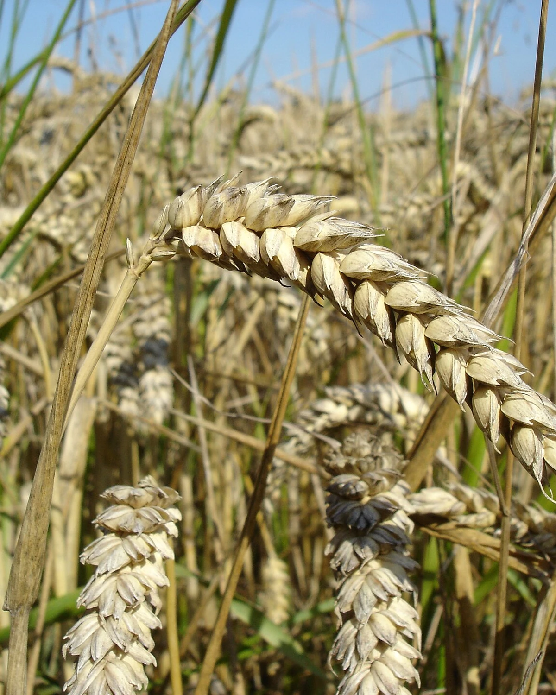
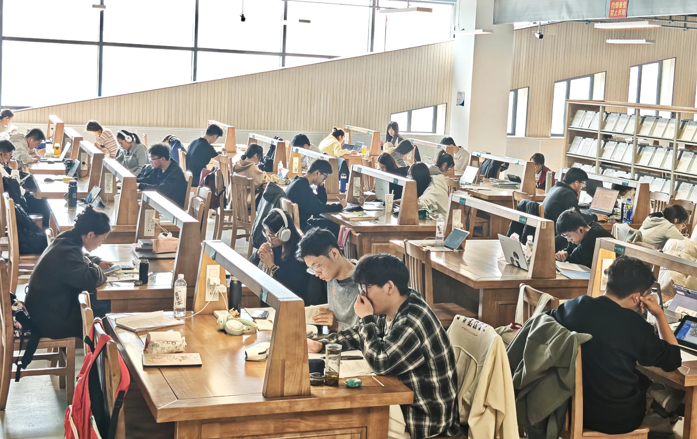
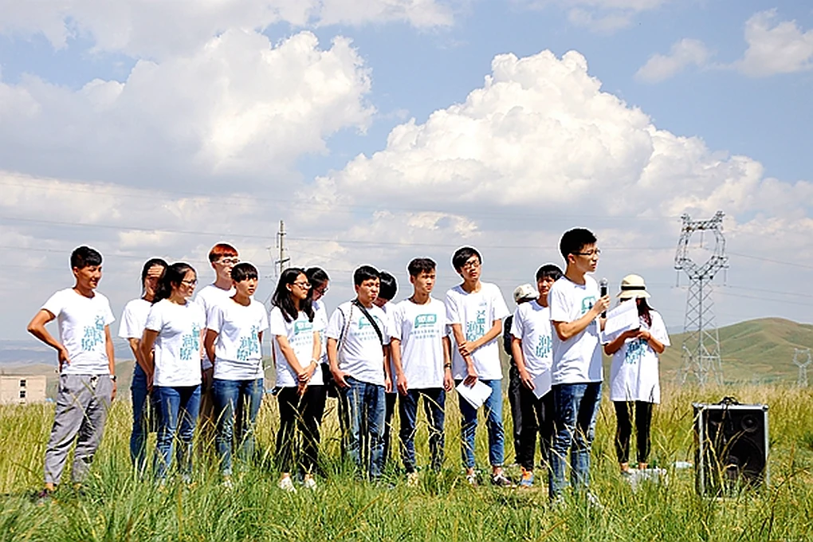

1946
甘肃农业大学 · 田野笔记
NO. 01 / 2026把青春 种进 沃野
我是甘农的一名学生。以前，校史馆里的年份离我很远；直到走进试验田、走进科技小院，我才明白，“红色”不只是墙上的颜色，也是把学问做进土地里的选择。
1946
建校起点
80
年扎根陇原
32
科技小院

甘农
80
载
1946 — 2026 · 八十载

01 / 一所学校与一片土地
八十年，
只做一件事。
1946 年 10 月，国立兽医学院在兰州创建。1958 年，学校与筹建中的甘肃农学院合并，成立甘肃农业大学。此后“三易其址、四更其名”，但“臻进人类健康、裨益国民生计”的初心没有变。
“敦品励学、笃志允能”的校训，和“自强不息、奋发有为”的甘农精神，最终都要落到一个很朴素的动作上：到土地里去，解决真实的问题。
24
个学院（教学部）
67
个本科专业
25万+
培养各类人才
03 / 从实验室到田野
种子不会说话，
但会回答。
马铃薯、冬油菜、紫花苜蓿、藜麦与胡麻……这些名字背后，是许多个在试验田里度过的春夏秋冬。
01 / 马铃薯
SOLANUM
甘农薯
Processing potato
加工型马铃薯新品种，亩产超万斤。从脱毒种薯到田间管理，每一步都要和土地反复商量。
成果 / 品种
↗
02 / 冬油菜
BRASSICA
陇油
Winter rapeseed
超强抗寒的冬油菜品种。陇原的冬天很长，但总有一些绿色，愿意在风里等到春天。
成果 / 品种
↗
03 / 紫花苜蓿
MEDICAGO
甘农苜蓿
Alfalfa
优质高产的紫花苜蓿，是牛羊的“口粮”，也是陇原草业与生态修复的重要支点。
成果 / 品种
↗
04 / 藜麦 · 胡麻
MACHINE
藜麦 · 胡麻
Harvester
国内首台藜麦、胡麻联合收割机在这里诞生。让一颗小种子，从试验田走向更大的产业。
成果 / 装备
↗
FIELD LETTER / 02

04 / 田野来信
第一次下地，
我才知道“农”字有多重。
“以前在教室里背‘粒粒皆辛苦’，只是一个句子。真正蹲在地里，看见一株苗从土里拱出来，才知道一个‘农’字，要多少日照、多少雨水、多少次弯腰。”
一名甘农学生 · 写于 2026 年秋
继续读田野笔记
05 / 下一季
下一季，
轮到我们。
不必等一个宏大的开始。把一件小事做完，把一次实践走深，把一份承诺写下来。田野会记得。